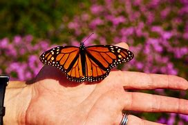
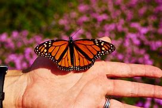

El ciclo de las mariposas comienza con el proceso reproductivo, el cual cuenta con dos etapas: cortejo y apareamiento.
1. Cortejo
En la reproducción de las mariposas, el cortejo es un paso crucial. Los machos realizan vuelos de
reconocimiento para buscar a las hembras, llaman su atención mediante piruetas y esparciendo feromonas.
De la misma forma, las hembras corresponden a la llamada liberando sus propias feromonas, que los machos
son capaces de percibir casi a dos kilómetros de distancia.
Algunos machos, en lugar de buscarlas, permanecen reposadamente sobre ramas de hojas o árboles, desde
donde empiezan a liberar sus hormonas para atraer a las parejas potenciales. Localizada la hembra,
el macho bate sus alas sobre ella, con el objetivo de impregnar sus antenas de las pequeñas escamas que libera.
Estas escamas contienen feromonas y contribuyen a que la hembra esté lista para el apareamiento.
2. Apareamiento
El siguiente paso en el ciclo de las mariposas es el apareamiento. Ambas mariposas unen las puntas de sus abdómenes,
cada una mirando en direcciones diferentes, para que se produzca el intercambio de gametos.
El macho introduce en el abdomen de la hembra su órgano reproductor y libera un saco denominado espermatóforo,
el cual contienen el esperma. El orificio de la hembra, por su parte, recibe el saco y con él realiza la
fertilización de los huevos, los cuales se encuentran en el interior de su cuerpo.
En la mayoría de las especies, el apareamiento se produce en un lugar donde ambos ejemplares pueden permanecer estáticos,
como una roca, una hoja, etc. Durante el proceso, las mariposas son vulnerables al ataque de un depredador,
por lo que algunas han desarrollado la capacidad de aparearse mientras vuelan. Estos son los procesos básicos
para entender cómo se reproducen las mariposas
 

Los órganos reproductores de las mariposas se encuentran en el abdomen, por lo que unen las puntas, mirando cada una en direcciones distintas.
El macho introduce su órgano reproductor y libera el saco de esperma, con el cual fertiliza los huevos que se encuentran en el interior de su compañera.
Finalizado el apareamiento, la hembra coloca entre 25 y 10.000 huevos en diferentes espacios de las plantas: ramas, flores, frutas y tallos se convierten en el refugio de los huevos.